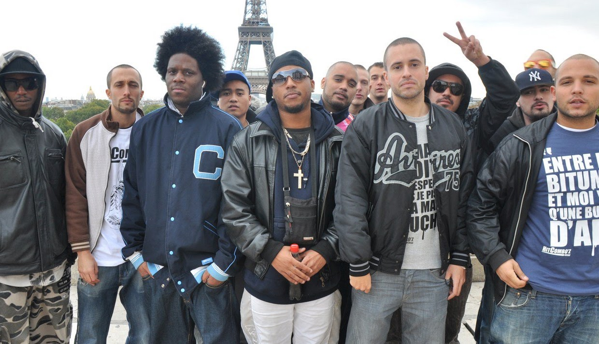
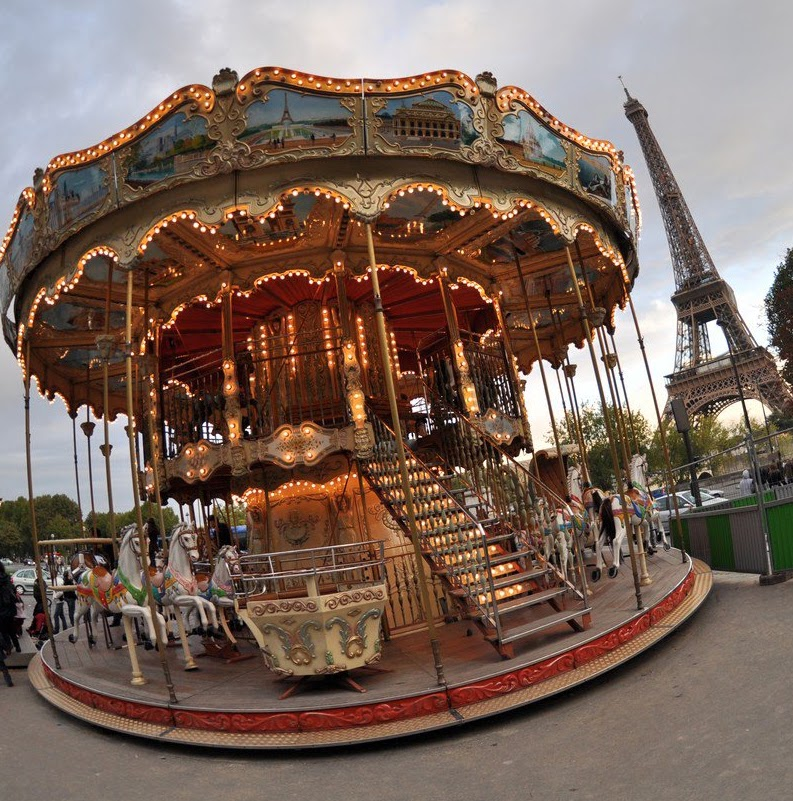
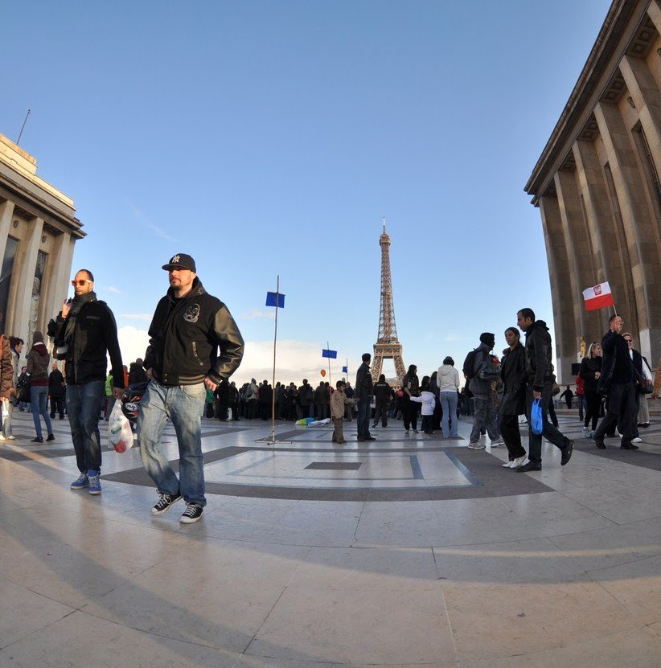
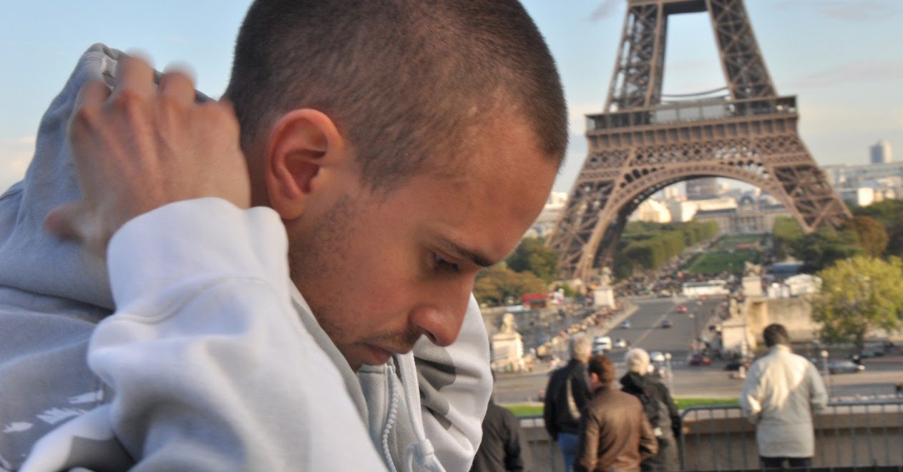
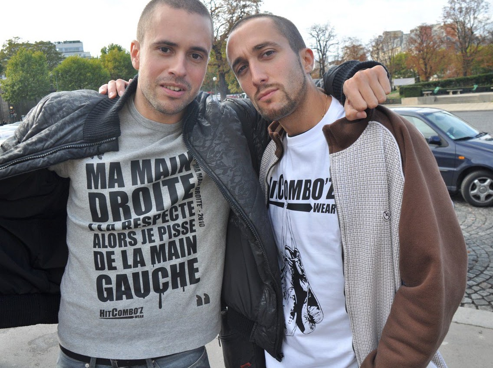
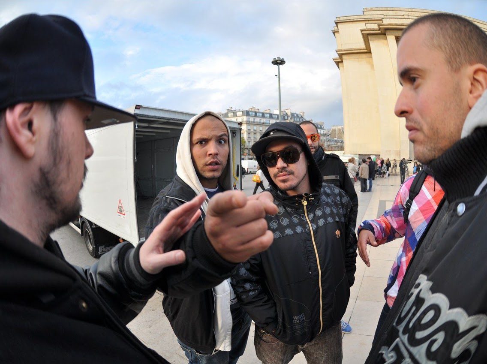
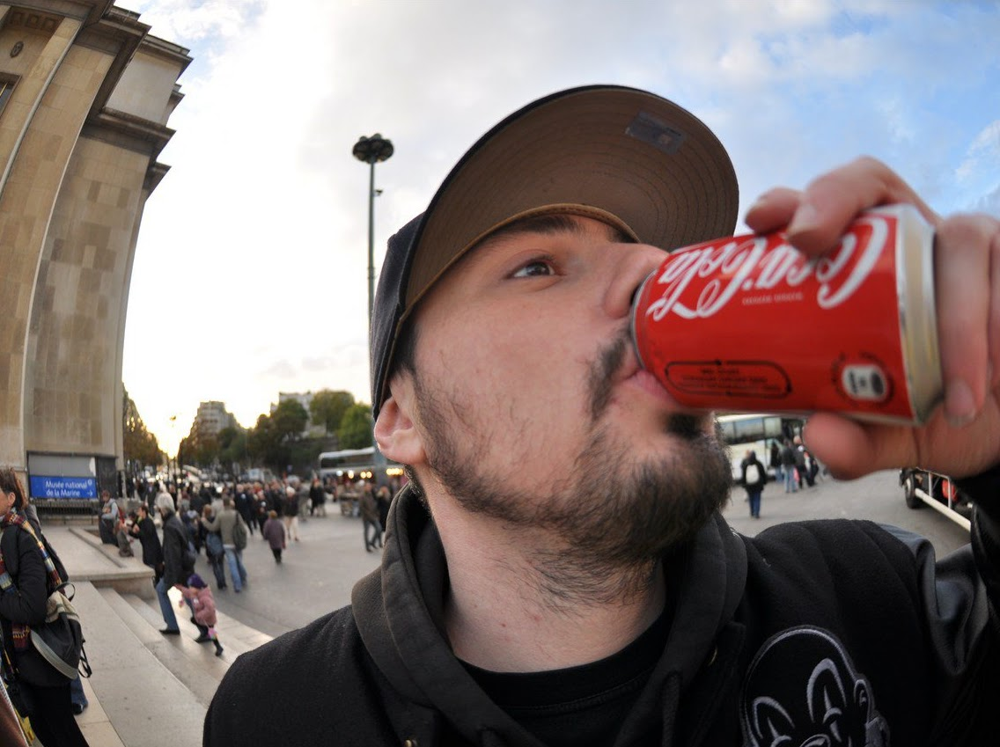
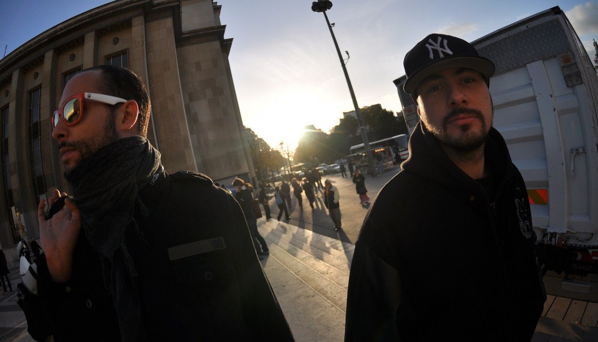

Elle — BTS
LOKO — “Elle”, from the album Vis ma vie. Trocadéro, Paris.
LOKO — « Elle », de l'album Vis ma vie. Trocadéro, Paris.
Photo shoot for LOKO's video for “Elle”, on the forecourt at Trocadéro in Paris. Loko's whole crew turned out, despite the freezing cold.
Photoshoot du clip de LOKO pour le morceau de l'album « Elle », sur le parvis du Trocadéro à Paris. L'équipe de Loko était au complet malgré un froid glacial !
Grey skies, true to form, lads in their best coats, caps, wigs and hoodies pulled down tight — one, two, three, go! Paris.
Le temps gris, fidèle à son habitude, des lascars vêtus de leur plus beau manteau, les casquettes, perruques, hoodies vissés sur les têtes, 1, 2, 3, partez ! Paris.








